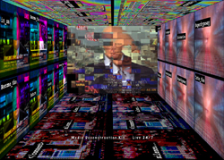

mediation art, politics, global communications, media, social change Mediation in the current art discourse is the process in which the different disciplines are employed in questioning, challenging and experimenting with new models and forms that propose social and political change. This presentation describes artistic strategies and methodologies developed over the past five years in conjunction with the US Department of Art & Technology, a virtual government agency created as a critique of the role of the artist in society and politics.
Abstract Concept: Triggered by September 11th, political conditions have been exacerbated by efforts of US government leaders to focus on military solutions to resolve cultural crisis. As the rupture has deepened, artists have proposed alternative models that exist to confront cultural divisiveness through artistic means. This presentation, “Art as Mediation in the Age of Global Communication,” is proposed for ISEA 2006, providing a reference point for describing forms of artistic exchange and mediation that bridge social, cultural, and political concerns globally, as demonstrated through recent new media projects, including the presenter's US Department of Art & Technology. Mediation in the arts: Modernism placed the artist on the pedestal of mediation to transmit utopias through sublimated artworks. Mediation in contemporary art has become an instrument by which a relationship and a critical environment can be set up engaging artists, artworks, curators, and its viewers in the form of exhibitions, publications, workshops, etc. Mediation in the current art discourse is the process in which the different disciplines are employed in questioning, challenging and experimenting with new models and forms that propose social and political change. It has been the expression of the artists who tried to create a platform of dialogue that intend to help societies think about the possibility and potential for social improvement. In the current art discourse, the narration, analogies and metaphors are not any more representative – artists now use these techniques proactively as mechanisms of mediation. Mediational art in the age of global communication: Contemporary artists are using art as mediation for discussion, criticism and transforming public opinion. In the age of global communication, the meaning of art is more closely related to mechanisms of mediation; it is more often produced, upheld or reconfigured within the realm of mediation and its link to the public. Political systems influence and are influenced by the media and on its themes, methods, techniques and strategies. Therefore, it is necessary to examine, question and criticize the intent of the media that in recent years has been highly suspect regarding truth and reliability of information. In many ways, the global information network is the ideal way to bring about this critique to initiate systems of mediation because they are non-hierarchical and thus empowering to the individual, bypassing the mainstream media. For example, it is the process of how a peer-to-peer network might invite participation and empowerment through the creation of a collective knowledge base. If the message of the artist is to encourage the individual to act, such that the individual can participate in complex social and political situations, then the Internet is in fact an ideal medium for organizing and providing systems of self-organization to individuals. Artists are using electronic systems to intervene, ultimately reshape dialogue as a mediator that counters or disrupts stereotypes and dangerous ideologies. Global information systems allow collective action among artists, curators, viewers, etc. This presentation will outline these concepts as well as discuss their execution through techniques developed in the ongoing project, the US Department of Art & Technology. The presentation will also reference other new media projects by an international rostrum of artists that seek to initiate social and political change through techniques of parody, cultural appropriation, emulation of government/corporate systems, and live performance. Ultimately, the objective of the presentation is to articulate a role for the artist in society as one whose reflections, ideas, aesthetics, sensibilities, and abilities can have significant and transformative impact on the world stage. URLS:
US Department of Art & Technology US DAT project information |